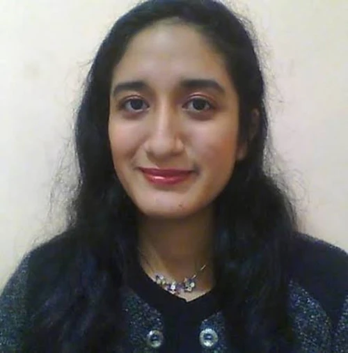
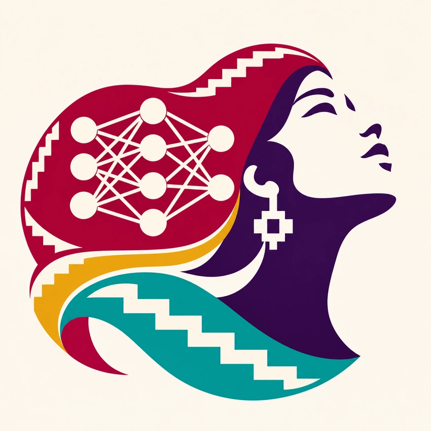
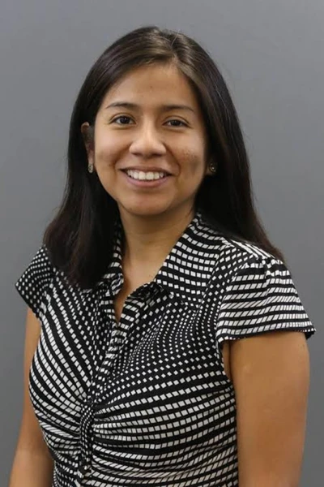
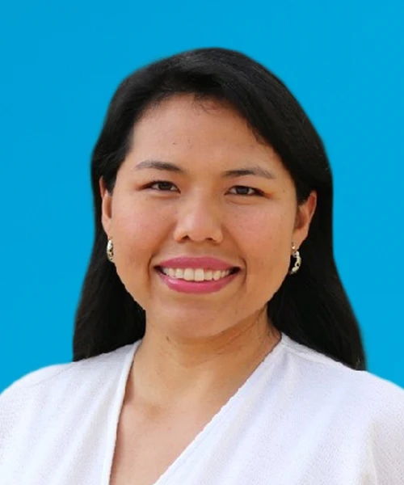
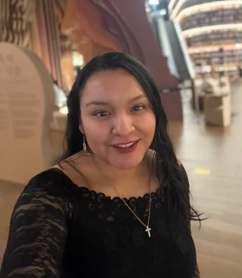
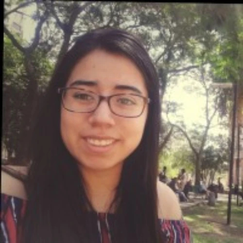
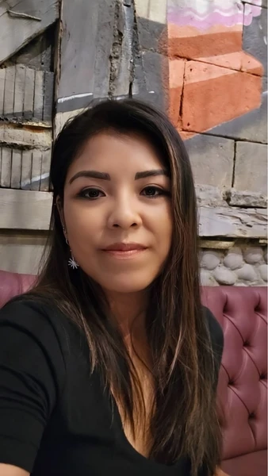

Dra. Lourdes Ramírez Cerna
Universidad de Lima
Docente investigadora. Responsable de OPTIMIA y cofundadora de Phawai.
Mesa redonda virtual
Ocho investigadoras peruanas comparten sus proyectos en inteligencia artificial y las preguntas que las mueven.
Regístrate en Zoom ↗
La mesa redonda

Universidad de Lima
Docente investigadora. Responsable de OPTIMIA y cofundadora de Phawai.

Marist University · AI4Good Lab
Docente investigadora y cofundadora de IAPUCP.

Universidad de Ingeniería y Tecnología (UTEC)
Docente investigadora. Cofundadora de aiTEC-Cusco y miembro de GINIA.

Universidad Católica San Pablo (UCSP)
Docente investigadora y cofundadora de Phawai.
Universidad de Ingeniería y Tecnología (UTEC)
Docente investigadora. Miembro de GINIA y del Centro Bio. IEEE Senior Member.
Universidade Federal do Rio Grande do Sul (UFRGS)
Investigadora.

Arcadia Impact – LASR Labs
AI Safety Researcher.

Universidade Estadual de Campinas (Unicamp)
Investigadora.
Nuestra red
En quechua, awaq significa «tejedora». Elegimos ese nombre porque "tejemos" redes neuronales y queremos tejer una red entre las peruanas que investigamos en inteligencia artificial.
Esta primera mesa está abierta a todas las personas. La pensamos especialmente para las niñas, jóvenes y mujeres que quieren conocer a otras peruanas que hacen investigación y conversar con ellas sobre sus proyectos.
Participa en la mesa redonda ↗